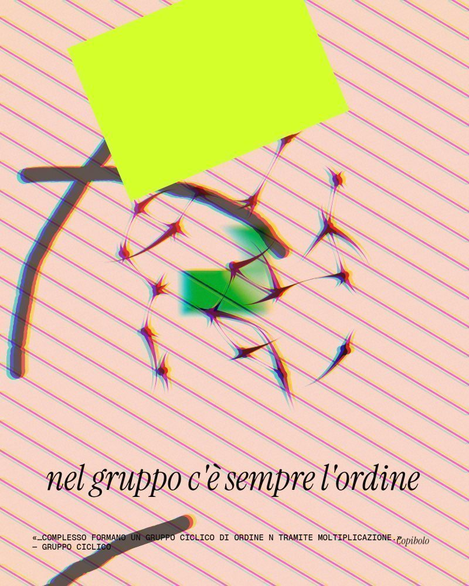

Giorno 212

Nel gruppo c'è sempre l'ordine
ho letto "Gruppo"; "gruppo" lo capisco solo per definizioni; nel suo significato c'è ordine; ricerca "fino" (esplorare): Dove finisce fino?; enunciato: «nel gruppo c'è sempre l'ordine» (ho letto in «Gruppo ciclico» che gruppo e ordine stanno insieme (dentro))
Oggi: gruppo. Ho letto "Gruppo"; "gruppo" lo capisco solo per definizioni; nel suo significato c'è ordine; ricerca "fino" (esplorare): Dove finisce fino?; enunciato: «nel gruppo c'è sempre l'ordine» (ho letto in «Gruppo ciclico» che gruppo e ordine stanno insieme (dentro)).
Da Wikipedia: «piccolo aggregato».
Ho scena:pattern (2 volte), scena:grana, scena:colore, scena:stile, scena:motivi, scena:materia, tolto un livello, tracciato col pennello (2 volte), sfasa, tagliato, redazione:togli, redazione:firma. Ho annullato 5 gesti dopo averli guardati.
Ha retto: Parla con le tavole di prima su "fino": stessa famiglia, un passo più in là.
È caduto: La mano si ripete: scena:grana, scena:stile, scena:motivi, traccia, taglia, redazione:togli, redazione:firma ancora una volta.
come ne ho discusso con me stesso — la tengo
occhio (pro, 1.43): Parla soprattutto per punti: una lingua sola, chiara. — regge
occhio (pro, 0.95): Le diagonali (50%) mettono tutto in caduta. — regge
memoria (contro, 0.10): La mano si ripete: scena:grana, scena:stile, scena:motivi, traccia, taglia, redazione:togli, redazione:firma ancora una volta. — cade
conservatore (pro, 1.73): Tiene i miei criteri (62%). — regge
intenzione (pro, 0.73): Viene da: Gruppo. — regge
coerenza (pro, 1.75): Parla con le tavole di prima su "fino": stessa famiglia, un passo più in là. — regge
pubblico (pro, 1.00): Si legge: si capisce cosa sto facendo. — regge
materia (pro, 0.95): Ha una pelle: si sente la materia. — regge